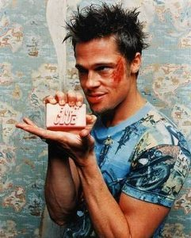

Equipe
Le groupe TeGaSz est un groupe de projet formé en 2012 par trois étudiants
d'EPITA passionnés, dans le but de réaliser pour la fin de l'année un
travail de programmation inédit.
Chef de projet :Maxime
Il y a maintenant quatre ou cinq ans, j'ai découvert les possibilités que pouvaient donner l'informatique. Malgré quelques notions de C et depuis six mois de CaML,et un projet en C\# je n'ai jamais eu l'occasion de m'investir pleinement dans le domaine du son lié à la programmation, mais je compte me servir de ce projet afin d'approfondir mes connaissances dans le domaine.
Julien S

Après un premier projet consistant à réaliser une cartographie 3D avec un grand intérêt principalement lié à la visualisation, celui-ci sera donc un lecteur audio. Il s'annonce tout aussi passionnant car le principe même du projet est un outil très commun et de notre quotidien aujourd'hui. Il va également me permettre de pouvoir approfondir le C que je connais relativement peu. Pouvoir créer son propre lecteur audio est un objectif très stimulant d'autant plus que le sujet est plus libre que le précédent ce qui va permettre une meilleure créativité.
Julien G
Troisième année a l'Epita, troisième spé, et enfin je commence le C. Après l'échec du projet cartographie, j'espère bien me rattraper avec cette fois ci un groupe soudé et motivé. n'ayant pratiquement aucune expérience concernant le son, que ça soit sa lecteur, sa production ou encore sa manipulation, ce projet promet de m'apporter de nombreuses connaissances sur le sujet, connaissances dont je suis toujours avide.
Répartition des tâches
| Tâches |
Maxime T. |
Julien S. |
Julien G. |
| interface |
|
|
|
| Fmod |
|
|
|
| interface C/Caml |
|
|
|
| Site Internet |
|
|
|